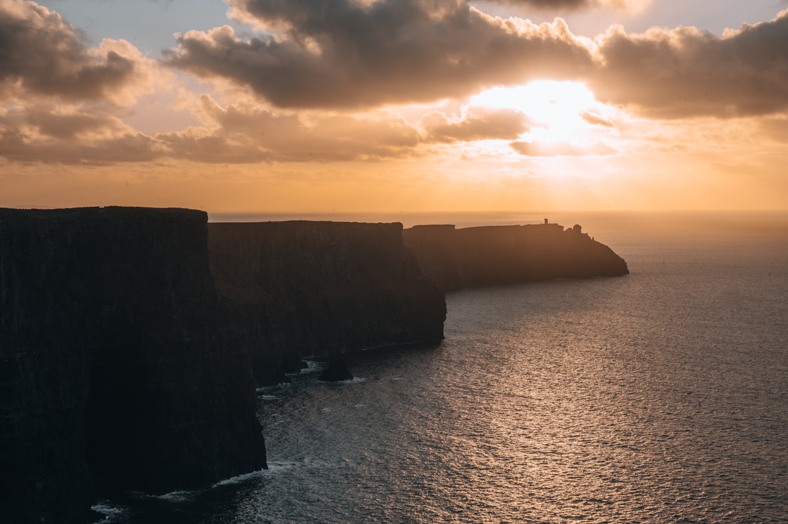
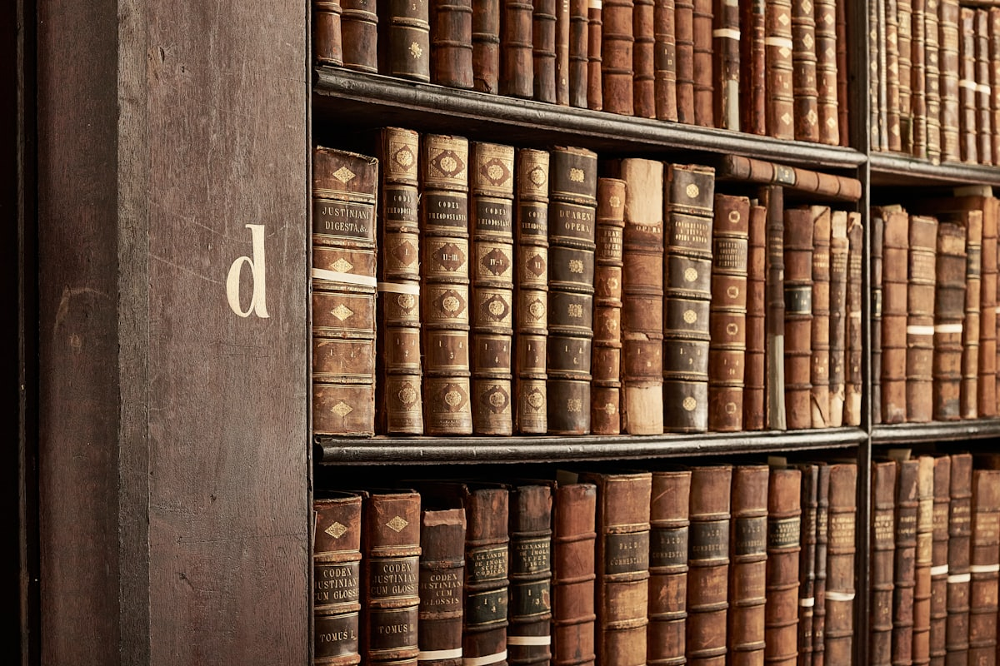
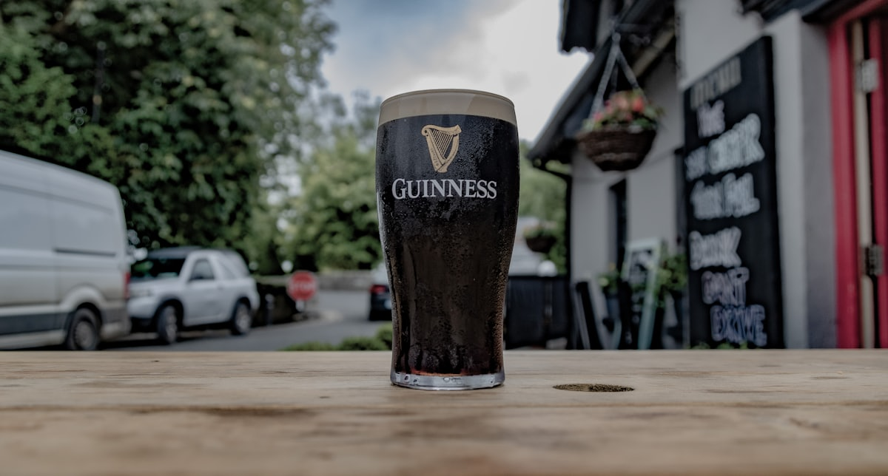
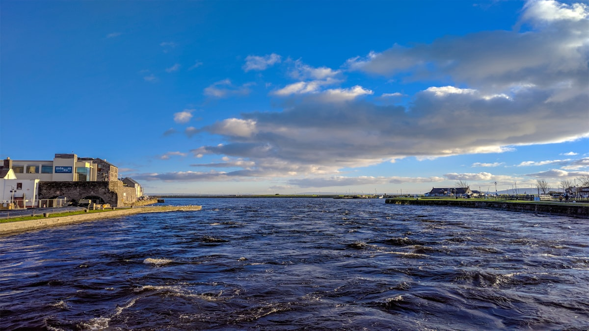
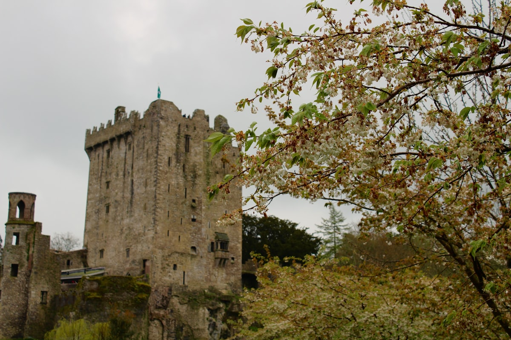
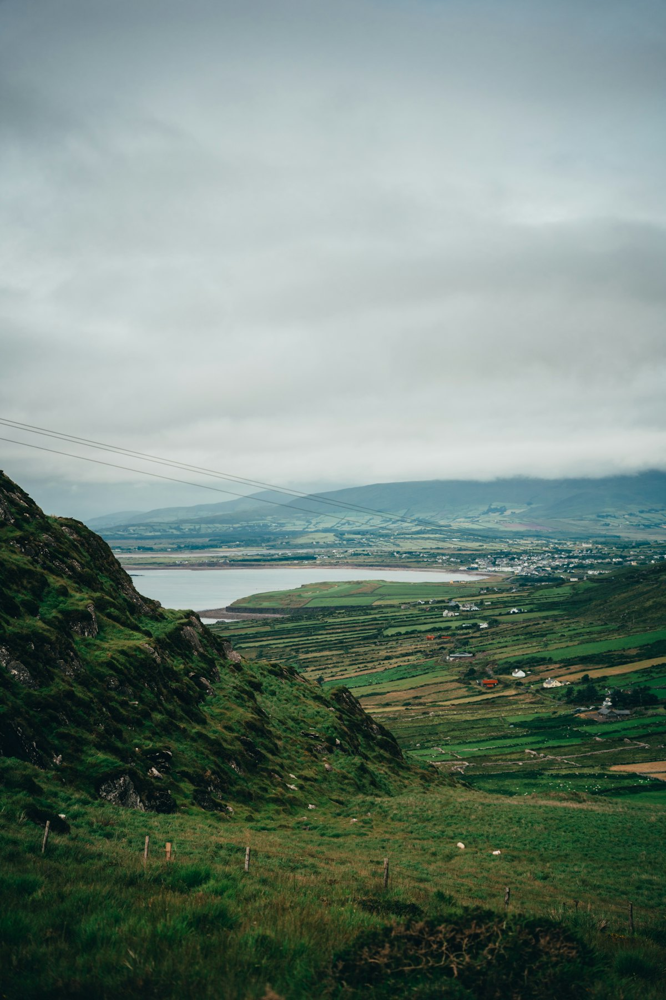
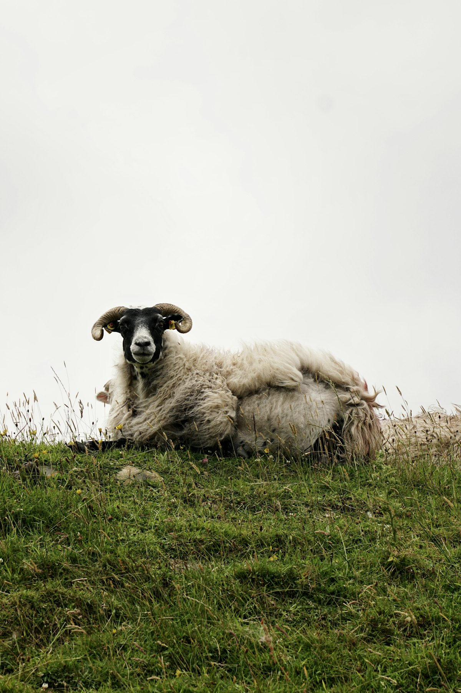
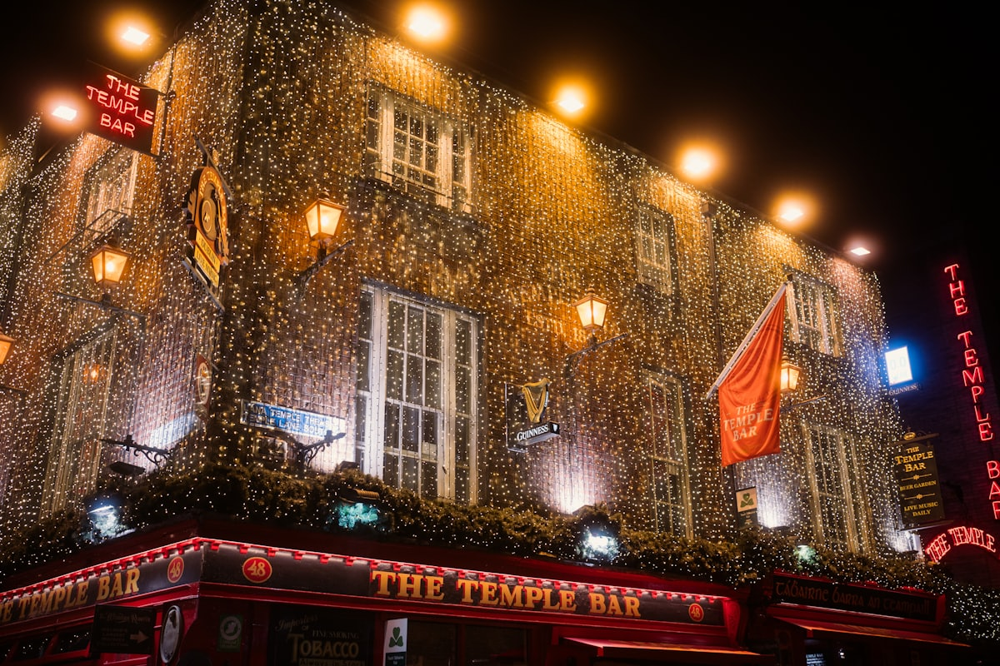

| 事项 | 结论 |
|---|---|
| 事项 | 结论 |
| 签证（最关键） | 中国护照需单独办爱尔兰短期 C 类签证（单次 €60 / 多次 €100 + VFS 服务费 ¥385），不与英国、申根互通；在线 AVATS 英文填表 + 本人到签证中心录指纹，约 20 个工作日 |
| 推荐方案 | 都柏林 3 天 + 高威/莫赫悬崖 3 天 + 科克 2 天 + 凯里之环 2 天 |
| 返程约束 | 海南航空 HU752 都柏林 12:00 起飞，D10 需一早从西部返回；建议 D9 傍晚结束凯里之环后返回科克/都柏林过夜 |
| 行程链 | 北京 → 都柏林 → 高威 → 莫赫悬崖 → 科克 → 布拉尼 → 基拉尼/凯里之环 → 返程 |
| 预算（人均） | 经济 11000–16000 ／ 标准 20000–28000 ／ 舒适 45000–60000（人民币） |
| 三件提前事 | ① 办爱尔兰签证 ② 订往返直飞机票与都柏林住宿 ③ 预约健力士/Book of Kells 时段票；要自驾务必提前订自动挡 |
| 季节提醒 | 5–9 月最佳（白天长、气温舒适），7–8 月游客最多；冬季多雨风大，海边景点体验打折 |
| 支付 | 欧元现金 + 信用卡/Apple Pay 广泛可用；小额场景备现金，1 欧元 ≈ 7.8 元人民币 |
以下为 10 天 9 晚的推荐节奏：都柏林安顿 3 天，再沿西海岸一路向西南推进。每日主景点 ≤2 个，城际以火车/巴士为主，凯里之环段才需要租车。
| 日期 | 行程 | 过夜地 | 主题 |
|---|---|---|---|
| D1 抵都柏林 | 北京✈都柏林（约 11.5h），圣三一学院 Book of Kells，入住市区 | 都柏林 | 抵达+文化 |
| D2 | 健力士啤酒厂 → 都柏林城堡/切斯特·比蒂图书馆 → 坦普尔酒吧区 | 都柏林 | 啤酒与古堡 |
| D3 | 圣帕特里克大教堂 → 凤凰公园 → 爱尔兰国家美术馆 → 酒吧之夜 | 都柏林 | 教堂与酒吧 |
| D4 | 都柏林→高威（火车 2.5h），高威湾、拉丁区、西班牙拱门 | 高威 | 海滨转场 |
| D5 | 莫赫悬崖 + 巴伦风景区一日（团游或自驾） | 高威 | 悬崖日 |
| D6 | 康尼马拉：凯尔莫尔修道院 + 康尼马拉国家公园（或阿兰群岛） | 高威 | 西海岸 |
| D7 | 高威→科克（巴士/火车约 3.5h），英国市场 + 圣芬巴尔大教堂 | 科克 | 老城转场 |
| D8 | 布拉尼城堡 + 金赛尔海港小镇 | 科克 | 城堡与海港 |
| D9 | 科克→基拉尼：基拉尼国家公园 + 凯里之环自驾 | 基拉尼 | 自驾日 |
| D10 返程 | 基拉尼晨游 → 返都柏林机场，HU752 12:00 飞北京 | — | 收尾 |
以下为 10 天全程的逐小时执行时间线，可当作「当天打开照着走」的清单。标注 ※ 的可选项视体力与天气取舍。
| 时间 | 事项 |
|---|---|
| 02:50 | 北京首都 T2 乘海南航空 HU751（A330-300）直飞都柏林，约 11h10m，机上一觉倒时差 |
| 07:00 | 抵达都柏林 T1，入境约 30–60 分钟（非申根国单独过关，护照盖章） |
| 08:30 | 机场 Airlink 747 大巴（约 €7，30–45min）或出租车（约 €30）到市中心 |
| 10:00 | 入住酒店/寄存行李，休整适应时差（比北京慢 7 小时） |
| 14:00–16:30 | 圣三一学院 Book of Kells 体验（成人 €26 起，网上预约时段）：9 世纪泥金手抄福音书 + 长厅图书馆，音频导览 |
| 18:00 | 晚餐：格拉夫顿街或坦普尔酒吧区，第一杯健力士 |
| 时间 | 事项 |
|---|---|
| 09:30–12:30 | 健力士啤酒厂 Guinness Storehouse（成人 €26 起，动态票价，网上订时段）：7 层玻璃酒杯建筑，参观酿造史 + 顶层 Gravity Bar 360° 俯瞰都柏林 + 免费一杯健力士 |
| 12:30–13:30 | 午餐：圣詹姆斯门附近餐厅或啤酒厂餐厅 |
| 14:00–16:00 | 都柏林城堡（庭院与切斯特·比蒂图书馆免费）：2026 年 5–12 月因欧盟轮值主席国内部关闭，城堡广场与全球顶级东方手稿馆仍可逛 |
| 16:00–18:00 | 坦普尔酒吧区（免费）：鹅卵石巷道、独立书店、爱尔兰手工艺品店 |
| 19:00 | 晚餐 + 传统音乐酒吧之夜 |
| 时间 | 事项 |
|---|---|
| 09:30–11:00 | 圣帕特里克大教堂（成人 €11.50，学生/老人 €10）：爱尔兰国教大教堂，Swift 曾在此任牧正，含语音导览 |
| 11:30–13:30 | 凤凰公园（免费）：欧洲最大城市公园之一，看野生黇鹿群，可租自行车 |
| 13:30–14:30 | 午餐：公园旁或回市中心 |
| 15:00–17:00 | 爱尔兰国家美术馆（免费）：叶芝、莫奈、毕加索藏画 |
| 18:30 | 晚餐：坦普尔酒吧区或圣殿区热闹酒吧，爱尔兰炖肉+苏打面包 |
| 时间 | 事项 |
|---|---|
| 08:30–11:00 | 都柏林 Heuston 乘 Irish Rail 火车到高威（2h20m–2h45m，网上单程 €13–19）或 Citylink 巴士（2.5–3h，€12–18） |
| 11:00 | 到达高威，入住市中心酒店（步行可达一切） |
| 12:00–13:00 | 午餐：拉丁区 Quay Street 海鲜浓汤+苏打面包 |
| 14:00–17:00 | 高威湾漫步（免费）：西班牙拱门、克拉达（Claddagh）渔村、盐山 Salthill 海滨步道 |
| 18:00–20:00 | 高威湾看日落 + 传统酒吧（高威是爱尔兰的「文化首都」，现场音乐密度全国第一） |
| 时间 | 事项 |
|---|---|
| 09:00 | 高威出发：可报莫赫悬崖半日团（¥388 起，含交通）或一日团含巴伦（¥506 起），也可自驾（约 1h 车程） |
| 10:30–14:00 | 莫赫悬崖 Cliffs of Moher（门票 €5，12 岁以下免费，夏季 8:00–21:00）：奥布莱恩塔、悬崖步道，214 米高俯瞰大西洋 |
| 13:00–14:00 | 午餐：杜林 Doolin 村（近悬崖的滨海小村） |
| 14:30–17:00 | 巴伦风景区 The Burren（免费）：月球表面般的石灰岩高原 + 邓盖尔城堡遗迹 |
| 18:30 | 返高威，晚餐：海鲜+生蚝 |
| 时间 | 事项 |
|---|---|
| 09:00 | 高威出发康尼马拉（Connemara）一日：可自驾或参当地小团 |
| 10:30–13:00 | 凯尔莫尔修道院 Kylemore Abbey（门票约 €17.5，含花园）：维多利亚哥特式修道院，湖畔机位绝佳 |
| 13:00–14:00 | 午餐：康尼马拉峡谷边的小餐馆 |
| 14:30–17:00 | 康尼马拉国家公园（免费）+ 科伊湖/克里姆山远眺，沿途随处可见自由放牧的羊群 |
| 18:00 | 返高威（若精力充沛可加阿兰群岛：罗萨拉港渡轮往返约 €30，渡海 40 分钟） |
| 时间 | 事项 |
|---|---|
| 08:30 | 高威出发：无直达火车，乘 Citylink 巴士（约 3h）或火车经利默里克转（约 3.5–4h）到科克 |
| 12:00 | 到达科克 Kent 站，入住市中心（圣帕特里克街一带） |
| 13:00–14:00 | 午餐：英国市场 English Market（免费，周日休）：1702 年至今的室内市场，熟食海鲜牛乳 |
| 14:30–16:30 | 科克老城（免费）：圣芬巴尔大教堂彩窗、河畔步道、圣帕特里克街 |
| 17:30 | 晚餐：科克是「爱尔兰美食之都」，Bunsen 汉堡或米其林推荐小馆 |
| 时间 | 事项 |
|---|---|
| 09:00–09:30 | 科克乘 Bus Éireann 215 路（约 30min）到布拉尼村 |
| 09:30–12:30 | 布拉尼城堡（成人 €24，学生/老人 €19，9:00 开园）：登顶吻「巧言石」获得口才，60 英亩花园可逛 2–3h |
| 12:30–13:30 | 返科克午餐 |
| 14:00–17:30 | 金赛尔 Kinsale（免费）：爱尔兰最美海港小镇，彩色渔村房 + 查尔斯堡（成人 €5）俯瞰海湾 |
| 18:30 | 返科克，晚餐：生蚝+本地黑啤 |
| 时间 | 事项 |
|---|---|
| 08:30 | 科克出发自驾或乘火车（经 Mallow 约 1.5h）到基拉尼；当天取租车 |
| 10:00–12:00 | 基拉尼国家公园（免费）：莫克罗丝庄园（Muckross House，成人约 €11.5）+ Ladies View 观景台，湖畔马车可选 |
| 12:30 | 从基拉尼顺时针开始凯里之环自驾：Kenmare → Sneem → Waterville → Cahersiveen → Killorglin → 基拉尼，全程 179km |
| 14:00–19:00 | 沿途停靠：Kenmare 湖镇、Sneem 彩色村、Waterville 海滩、Kerry Cliffs 凯里悬崖、Killorglin 河镇 |
| 20:00 | 返基拉尼住宿（或当晚开回科克，次日返程更从容） |
| 时间 | 事项 |
|---|---|
| 07:00–08:30 | 基拉尼国家公园晨游（免费）：湖边漫步或罗斯城堡晨曦（视前夜住宿地而定） |
| 08:30–09:00 | 基拉尼乘火车（经 Mallow 转）或自驾返都柏林（约 4h）；若 D9 已回科克，改乘 6:00 首班火车 8:32 抵都柏林 Heuston |
| 09:00–09:45 | 都柏林 Heuston 转 Airlink 747 机场大巴（€7）到都柏林机场 T1 |
| 10:00–11:30 | 机场办理登机 + 退税 + 免税店（爱尔兰威士忌、羊毛制品伴手礼） |
| 12:00 | 都柏林✈北京 HU752（约 11h10m），次日早晨 05:10 抵京 |
必去（必去）/ 顺路（顺路）/ 可跳过（可跳过）。

必去
必去
必去
必去
必去
顺路
顺路图片为 Unsplash 主题图（莫赫悬崖日落、圣三一学院长厅、健力士黑啤、高威湾、布拉尼城堡、凯里之环、康尼马拉羊群、坦普尔酒吧均为爱尔兰实景）。更多免费景点：凤凰公园、爱尔兰国家美术馆、基拉尼国家公园、英国市场（周日休）。
点击左侧节点可在地图上定位；点击地图 marker 会高亮对应节点。坐标为 WGS-84 转 GCJ-02 纠偏后标注。
以下为单人、不含购物的估算，人民币计价；出发地基准北京。汇率按 1 欧元 ≈ 7.8 元人民币估算。往返直飞按海南航空淡季 5500–7500 元计，旺季 7–8 月更贵。
| 项目 | 经济（11000–16000） | 标准（20000–28000） | 舒适（45000–60000） |
|---|---|---|---|
| 往返机票 | 直飞淡季 5500–6500 | 直飞旺季 6500–8500 | 直飞商务/灵活 12000–18000 |
| 住宿（9 晚） | 青旅/B&B 300–450/晚 | 3 星酒店 550–850/晚 | 4 星/庄园酒店 1200–2000/晚 |
| 境内交通 | 火车+巴士 1200–1800 | 火车+租车 3 天 2800–3800 | 全程自驾+全险 5500–8000 |
| 门票 | 基础景点 900–1400 | 全含门票+导览 2000–2800 | 全含+体验项目 3800–5500 |
| 餐饮（10 天） | 超市+简餐 1800–2500 | 正常餐厅+酒吧 3500–5000 | 精致餐厅+美食体验 9000–13000 |
都柏林可加 EPIC 移民博物馆、都柏林动物园、国家博物馆（均免费或低价）；凯里之环取消自驾，改基拉尼国家公园湖边马车+半日；莫赫悬崖注意风大，抱紧小孩。爱尔兰 5 岁以下儿童多数景点免票，带娃选复活节（4 月）或夏季白昼长的月份。
机票与住宿整体便宜 30–40%，但白昼短、雨多风大，莫赫悬崖与凯里之环体验打折。可增加室内项目：健力士、Book of Kells、国家美术馆、圣三一周边咖啡馆。12 月圣诞季都柏林酒吧点灯氛围佳，是城市观光的最佳季节。
| 方式 | 时长 | 参考价 | 备注 |
|---|---|---|---|
| 直飞（推荐） | 北京→都柏林约 11h10m | 往返 5500–8500 元 | 海南航空 HU751/HU752，夏季 6–9 月每日一班，A330-300 |
| 转机 | 14–20h | 4500–6500 元 | 经上海/伦敦/迪拜/伊斯坦布尔，便宜但费时 |
| 境内转场 | 火车/巴士为主 | 单程 €12–27 | 都柏林↔高威↔科克↔基拉尼均有城际铁路/巴士 |
| 区域 | 价格/晚 | 优点 | 短板 |
|---|---|---|---|
| 都柏林·坦普尔/格拉夫顿街 | 青旅 €30–50 / 3星 €90–160 / 4星 €180+ | 步行可达所有景点 | 旺季贵，酒吧区夜晚吵 |
| 都柏林·多基区/海港 | 3 星 €100–150 | 安静、临海 | 去市区需公交 |
| 高威·市中心/拉丁区 | 3星/B&B €80–140 | 紧邻酒吧街与海湾 | 赛马等活动日爆满 |
| 科克·圣帕特里克街一带 | 3星/B&B €70–130 | 美食之城，物价低于都柏林 | 老建筑隔音一般 |
| 基拉尼·火车站附近 | 3星/B&B €80–150 | 凯里之环起点，交通便利 | 旺季一房难求，提前 2–3 周订 |